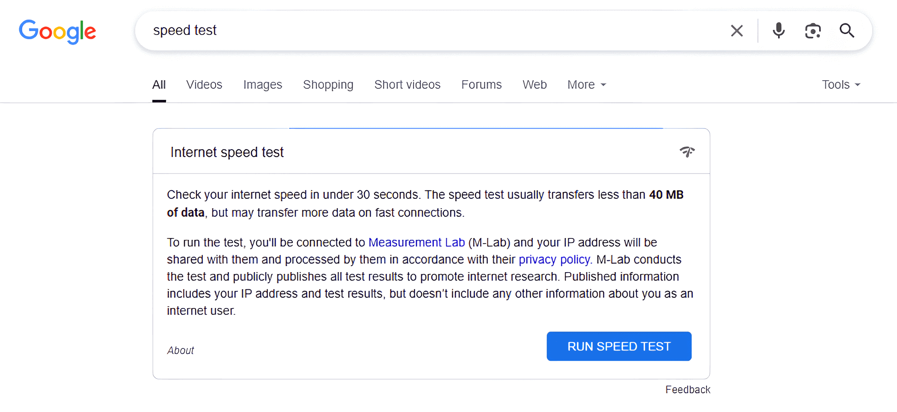

如何以更低的價格獲得 Netflix 4K 畫質
在觀看Netflix視頻時，你是否渴望享受更清晰、更細膩的視頻畫質？Netflix推出了Premium訂閱套餐，讓你有機會體驗4K視頻效果。
然而，視頻質量遠不止選擇合適的訂閱套餐那麼簡單。網絡速度、設備支持以及帳戶設置是否正確都會影響最終呈現的畫質。
因此，在本文中，我們將總結提高 Netflix 視頻畫質的方法，幫助你提升觀看體驗，確保每一幀都顯示清晰、細膩的畫面。
獲得 4K 的最直接方式：訂閱 Netflix Premium
訂閱 Netflix Premium 是獲得更優質視頻質量最直接的方法。Netflix 提供多種訂閱套餐，這些套餐不僅價格不同，視頻質量和可同時播放的設備數量也有所不同。
Netflix訂閱價格
截至 2025 年，Netflix 目前提供三種付費訂閱計劃。這些計劃的具體詳情如下表所示。
| 計劃 | 標準版，含廣告 | 標準 | 優質的 | 奈飛小鋪 |
|---|---|---|---|---|
| 價格(月) | 7.99 美元 | 17.99 美元 | 24.99美元 | $6.99(1個個人資料) |
| 清晰度 | 1080P | 1080P | 4K | 4K |
| 廣告 | ✅ | ❌ | ❌ | ❌ |
| 多設備 | 2 | 2 | 4 | 1 |
從表格中我們可以看出，Netflix 的最佳訂閱方案是 Premium 方案。但自 2017 年以來，Netflix 幾乎每年都會漲價。到 2025 年，其 Premium 方案的價格將從每月 13.99 美元漲到 24.99 美元。雖然 Netflix 上的節目很棒，但我仍然覺得訂閱費有點貴。所以我開始尋找省錢的方法。
以較低價格觀看 Netflix 4K 的技巧
我發現通過加入訂閱共享平台，我可以節省很多在 Netflix 上花費的錢。
我試過的所有分享平台中，我最推薦奈飛小鋪。不僅可以享受折扣價格，還能享受到和Netflix壹樣的服務。
同時，奈飛小鋪 提供全天候客戶服務，所以每當我遇到問題時，總能得到快速響應和解決方案。這種全天候服務是其他平台無法提供的。
目前，奈飛小鋪 提供兩種類型的 Netflix 套餐，壹種只能由壹個人使用，另一種允許你購買專屬帳戶與自己的家人共享。

圖中顯示了 Solo 帳戶的價格和服務與官方Netflix Premium 套餐的對比，如你所見，沒有區別。
對於像我這樣喜歡使用 Netflix 但又想省錢的人來說， 奈飛小鋪 絕對是最值得信賴和最值得推薦的選擇。
如何在計算機上提高 Netflix 視頻質量
除了購買 Netflix Premium 之外，還有一些方法可以提升 Netflix 的視頻質量。2024 年之前，在電腦上觀看 Netflix 時，可以使用快捷鍵"Ctrl + Shift + Alt + S"強制使用 4K 畫質。然而，到了 2025 年，Netflix 發現了這個漏洞，並完全修復了這個快捷鍵BUG。那麼，現在還有其他方法可以提升電腦上的 Netflix 畫質嗎？
選擇兼容 4K 的瀏覽器
Netflix 對瀏覽器有要求，因此選擇合適的瀏覽器可以幫助你有效提高計算機上 Netflix 視頻的質量。Netflix 僅允許你在 Google Chrome、Microsoft Edge 和 Safari(適用於 Mac 用戶)上以 4K 分辨率觀看。
因此，即使你擁有 Premium 套餐，如果你使用 Firefox 或 Opera 等瀏覽器，也將無法以 4K 分辨率觀看。請確保你使用受支持的瀏覽器，以最佳畫質享受 Netflix 的精彩內容。
檢查你的互聯網速度
選擇合適的瀏覽器後，下壹步就是檢查網速。不同分辨率的視頻需要不同的網速。下表列出了每種分辨率的推薦網速。
| 視頻質量 | 解決 | 建議速度 |
|---|---|---|
| 超高清 | 4K | 25 Mbps |
| 高清 | 720P/1080P | 5 Mbps |
| SD | 480P | 3 Mbps |
如果你不確定如何在計算機上檢查互聯網速度，這裡有三種免費且簡單的方法：
使用 Speedtest： 下載"Speedtest"應用，點擊"開始"按鈕，等待測試完成。檢查你的下載速度是否符合 4K 流媒體播放的要求。
Google 網速測試： 在 Google 搜索欄中輸入"網速測試"，你會看到一個內置的網速測試工具。點擊"運行網速測試"即可檢查你的連接速度。
使用 Netflix 內置的網速測試工具： 只需點擊此鏈接即可直接測試你的網速。測試過程如下圖所示。

這些簡單的方法將幫助你確保你的互聯網速度足夠快，以滿足你所需的 Netflix 質量。
檢查你的Netflix帳戶設置
如果你的瀏覽器和互聯網速度都達到標準，但仍然無法獲得 4K 質量，那麼是時候檢查你的 Netflix 帳戶設置了。
壹般來說，如果你不自行更改設置，"播放質量和數據使用"選項將默認設置為"自動"，這會自動降低流媒體的質量。因此，在使用 Netflix 之前，我們必須手動將"質量和數據使用"選項切換為"高質量"選項。
總而言之，訂閱高級套餐後，務必仔細檢查瀏覽器、網速和賬戶設置。如果不仔細檢查配置，我們的錢就得不償失。只有完全按照這三種方法配置，才能真正安心享受 4K 畫質的 Netflix。
提高移動設備上 Netflix 視頻質量的方法
如果你在 地鐵上，可能想看壹些視頻來打發時間。為了獲得身臨其境的體驗，4K 可以幫助你實現。那麼，如何將 Netflix 視頻質量提升到 4K 呢？有壹些方法可以幫助你提高移動設備上的視頻質量。
首先要檢查的是網速。要以 4K 分辨率觀看，網速至少需要 25 Mbps。如果網速達不到這個要求，即使你選擇高清設置或購買高級套餐，系統也會自動降低分辨率。
除了網速，手機硬件也至關重要。通常，手機屏幕分辨率越高，觀看體驗越好。如果你使用的是 iPhone，需要註意的是，目前市面上沒有壹款機型真正擁有 4K 分辨率。目前，市面上支持全 4K 分辨率的智能手機只有索尼 Xperia 1 系列和索尼 Xperia XZ Premium/XZ2 Premium。
因此，如果你想在手機上享受 4K Netflix 的精彩內容，你不僅需要穩定快速的網絡連接，還需要壹部配備高分辨率顯示屏的手機。只有當你的網絡和設備都滿足這些要求時，你才能真正體驗到 4K 流媒體帶來的沈浸式畫質。
提高電視上Netflix視頻質量的方法
當你躺在沙發上時，你會覺得手機屏幕太小，眼睛很累。而你又想在電視上觀看Netflix。所以，要想在電視上觀看4K視頻，關鍵在於選擇合適的HDMI接口。
HDMI 端口是將電視連接到機頂盒或遊戲機等外部設備的接口。HDMI 有不同的版本，並非所有版本都支持 4K 分辨率。有些版本根本不支持 4K 流媒體播放。
因此，在電視上觀看 Netflix 時，除了選擇正確的套餐和擁有足夠快的互聯網連接之外，HDMI 端口本身也是一個關鍵因素。
概括
簡而言之，無論你使用什麼設備觀看 Netflix 的 4K 內容，都需要訂閱 Netflix Premium 套餐。之後，請確保你的網速高於 25Mbps，並將 Netflix 帳戶設置從"自動"切換到"高質量"。這樣，你就可以在任何設備上享受真正的 4K 超高清流媒體體驗。
常問問題
1. Netflix 標準套餐的視頻質量如何？
Netflix 標準套餐支持高達 1080p 的視頻質量，並且每次僅供壹人觀看。基本套餐每月收費 7.99 美元。它允許你觀看所有可用內容，且不受廣告幹擾。
2. Netflix 電影的最大存儲空間是多少？
Netflix 的下載限制因訂閱套餐而異。標準套餐(含廣告)每月最多可下載 15 部影片。標準套餐允許在兩台設備上分別下載最多 100 部影片。高級套餐允許在最多 6 台設備上下載最多 100 部影片。存儲內容的有效期通常為 7 至 30 天。
3. 如何在 iPad 上設置 Netflix 質量？
在"個人資料和家長控制"部分中選擇一個用戶，然後點擊下方按鈕打開列表。在"播放設置"部分中，點擊藍色的"更改"按鈕。根據你的需求選擇畫質。
相關文章：